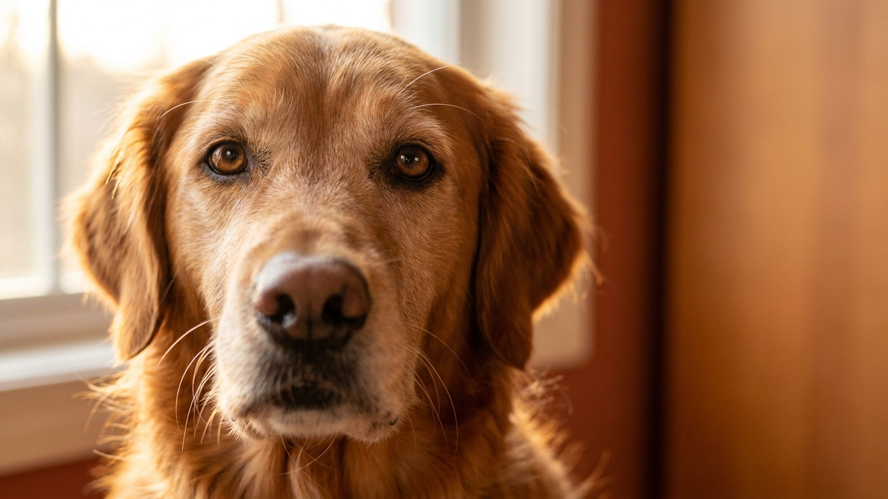

Будущие владельцы в среднем занижают расходы на собаку вдвое — это показывают опросы зоомаркетов 2025–2026 годов. Люди считают корм, забывают про плановые визиты к ветеринару, не закладывают передержку и упускают десятки мелких трат, которые в сумме дают приличную цифру. Ниже — полная раскладка по статьям, с диапазонами для мелкой, средней и крупной собаки: цифры, на которые можно опираться при планировании бюджета до того, как завести питомца.
🐾 Питомец ведёт себя странно?
AnimaLife расшифрует поведение кошки и собаки и подскажет, что делать. Попробуйте бесплатно прямо в мессенджере.
Содержание собаки начинается с еды — и разброс здесь огромен. Мелкая собака (до 10 кг) съедает заметно меньше, чем крупная, а качество корма напрямую влияет на итоговую сумму.
Натуральное питание или премиум-корм увеличивают цифры в 1,5–2 раза. Лакомства и специальные добавки считайте отдельно: плюс 500–1 500 ₽/мес в зависимости от привычек хозяина.
Плановые обработки и ежегодный осмотр у ветеринара — это не разовые траты, а регулярная статья бюджета. Расходы на собаку 2026 года включают ежегодный ветосмотр, обновление прививок, сезонные обработки от паразитов и плановый анализ крови для пожилых собак.
Итого только на плановую профилактику: от 600 до 1 500 ₽ в месяц в пересчёте на 12 месяцев. Без этой статьи бюджет занижен принципиально.
Единовременные покупки при заведении собаки (поводок, шлейка, миски, лежак, переноска) составят от 5 000 до 20 000 ₽ в зависимости от размера и породы. Дальше идут регулярные расходы.
Отпуск, командировка, болезнь хозяина — все эти ситуации требуют либо профессионального выгула, либо передержки. Это статья, о которой большинство забывает при планировании.
Сколько стоит собака в год в итоге? Для мелкой породы — от 70 000 до 120 000 ₽. Для средней — от 100 000 до 180 000 ₽. Для крупной — от 150 000 до 280 000 ₽. Это реалистичные цифры без экстремальных трат, но с честной профилактикой. Планируйте заранее — тогда питомец не станет источником финансового стресса.
🐾 Здоровье питомца под контролем
AI-ветеринар, дневник здоровья и персональные советы для вашего питомца — установите AnimaLife бесплатно.
🐾 Понравился разбор?
Подпишитесь на канал — каждый день разбираем по одному тревожному симптому у кошек и собак: что в пределах нормы, а когда пора к врачу. Подпишитесь, чтобы не пропустить разбор, который может спасти здоровье вашего питомца.
Материал носит информационный характер и не заменяет очную консультацию ветеринара.